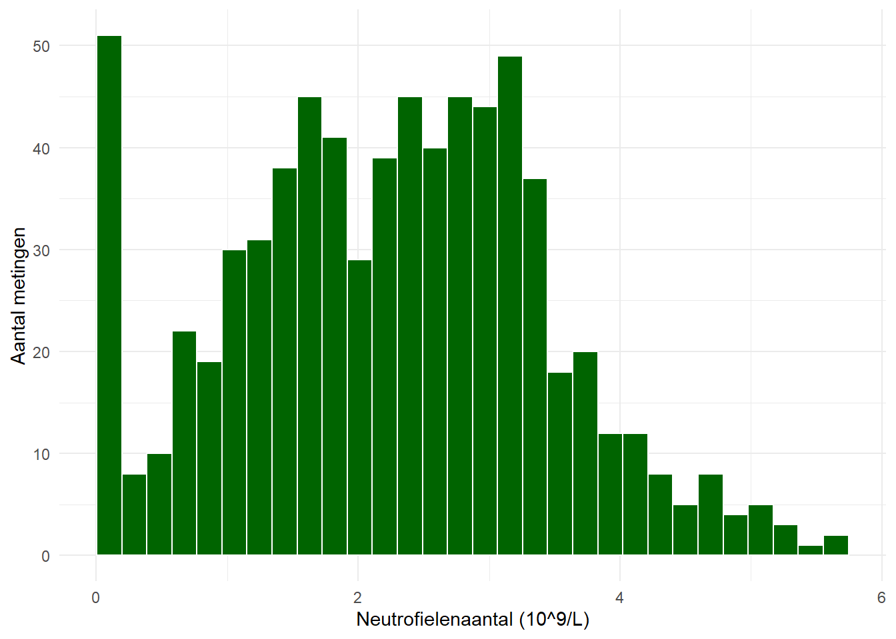
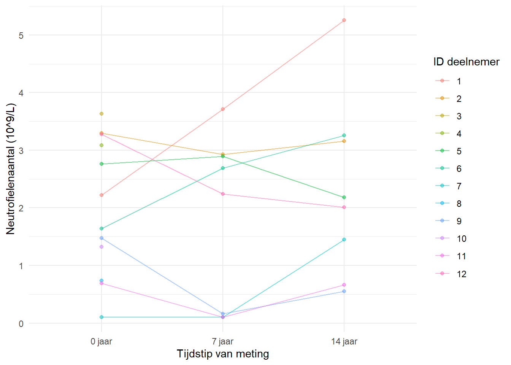
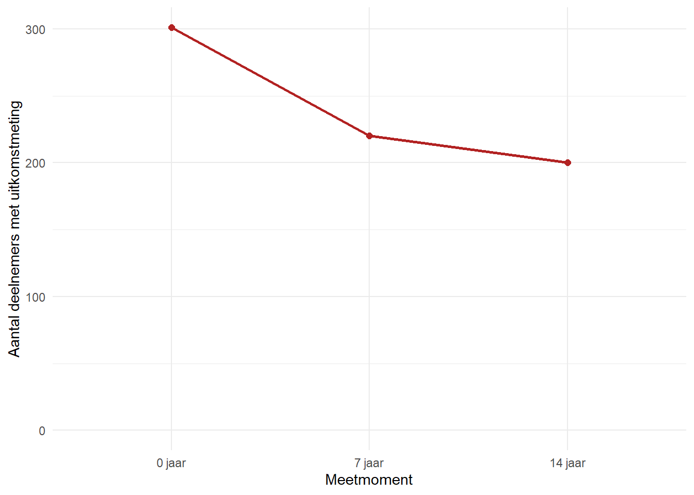
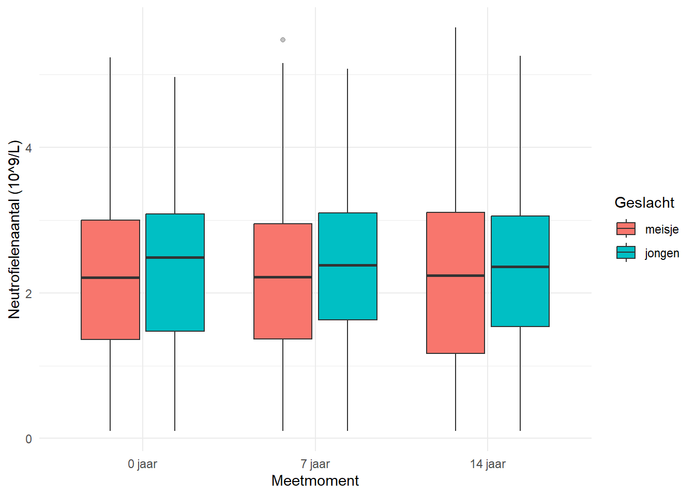
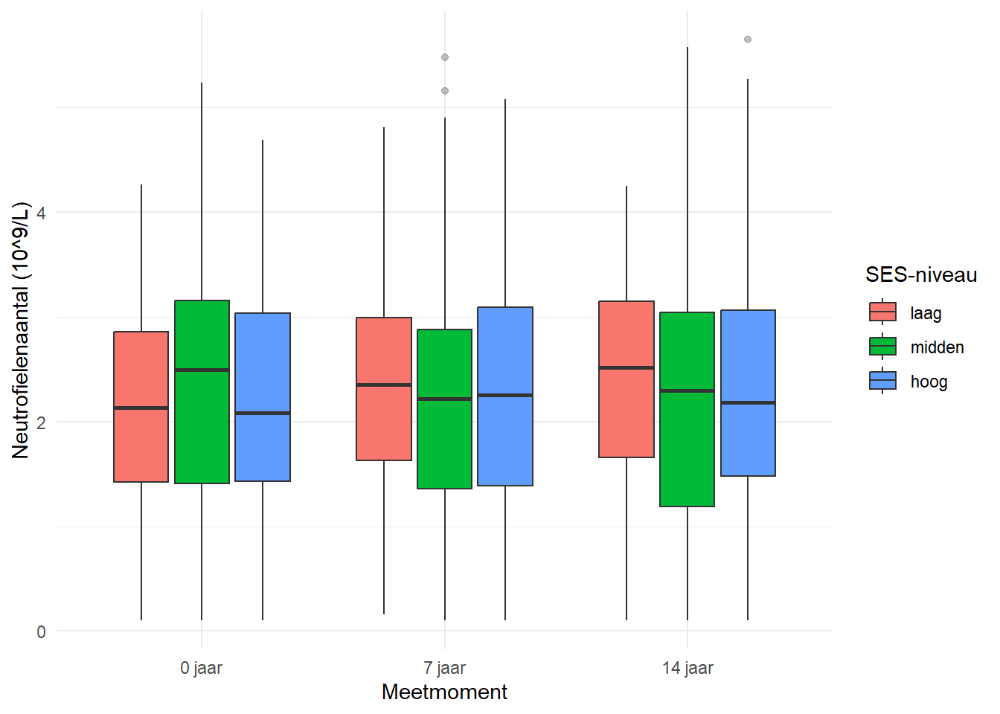
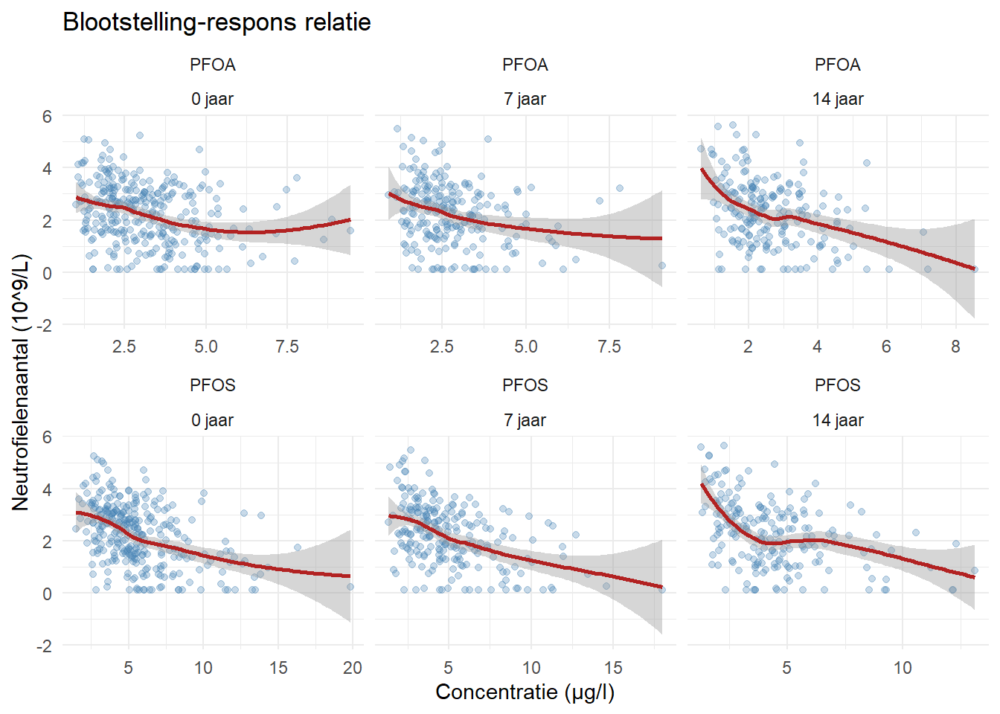

Dit voorbeeld is puur illustratief en heeft geen wetenschappelijke waarde. Gebruik dit louter als een voorbeeld mocht je inspiratie nodig hebben voor je eigen data exploratie. Dit is dus ook niet compleet en is in praktijk vaak veel uitgebreider.
Het doel is om te tonen hoe een data exploratie kan verlopen. We gebruiken hiervoor een gesimuleerde dataset van een longitudinale studie met 301 deelnemers, waarbij de blootstelling aan PFAS (PFOS, PFOA, PFHxS en PFNA) werd gemeten op 3 tijdstippen (0, 7 en 14 jaar). De uitkomst is het neutrofielenaantal in het bloed. De dataset bevat ook enkele covariaten zoals geslacht en sociaal-economische status (SES).
Merk op dat de exposures of bloodstellingen beschreven worden door 4 variabelen, bijvoorbeeld PFOS_imp, PFOS_lod en below_LOD_PFOS. Wanneer een concentratie onder de detectielimiet (LOD) ligt, wordt deze beschreven door -3 en vervangen door een imputatiewaarde in de variabele PFOS_imp. De variabele PFOS_lod geeft aan wat de detectielimiet is voor PFOS. De variabele below_LOD_PFOS is een indicatorvariabele die aangeeft of de concentratie onder de LOD ligt (1 = onder LOD, 0 = boven LOD).
4.1 Exposure biomarkers
4.1.1 Exposures onder de detectielimiet of limit of detection (LOD)
Bij de metingen van deze stoffen liggen sommige concentraties onder de detectielimiet (LOD). We berekenen het percentage van de metingen dat onder de LOD ligt voor elke stof. Hierdoor krijgen we een idee hoe representatief elke stof is en of we deze kunnen gebruiken in verdere analyses.
Table 4.1: Percentage metingen onder de detectielimiet (LOD) per stof
Stof
% onder LOD
PFOS
0.0
PFOA
0.0
PFHxS
44.4
PFNA
14.4
Op basis van de resultaten zullen we voor eenvoud in deze demo enkel verder kijken naar PFOS and PFOA aangezien deze alle metingen boven de detectielimiet hebben.
4.1.2 Verdeling
We starten met een data exploratie van de twee PFAS-blootstellingen, met een histogram van de verdeling.
Table 4.2: Beschrijvende statistieken per blootstelling
stof
n
Gemiddelde
sd
p25
Mediaan
p75
Min
Max
PFOA
903
2.884
1.324
1.974
2.587
3.553
0.620
9.442
PFOS
903
5.041
2.589
3.188
4.463
6.055
1.261
19.824
4.1.3 Stratificatie volgens subpopulaties
Tot nu toe keken we telkens naar de verdeling van de PFAS-blootstellingen over alle tijdspunten heen. We kunnen ook de verdeling van de PFAS-blootstellingen bekijken, gestratificeerd naar geslacht of meetmoment. We gebruiken hiervoor boxplots, waarbij we de y-as op een log-schaal zetten om de spreiding beter te kunnen visualiseren.
Figure 4.2: Blootstelling per stof, gestratificeerd naar geslacht
We zien duidelijk dat de concentraties van PFOS en PFOA hoger zijn bij jongens dan bij meisjes. Het is belangrijk om dit verschil in geslacht mee te nemen in de verdere analyses. We kunnen ook de verdeling van de PFAS-blootstellingen bekijken, gestratificeerd naar meetmoment.
Figure 4.3: Blootstelling per stof, gestratificeerd naar meetmoment
We zien duidelijk een dalende trend in de concentraties van PFOS en PFOA over de tijd. Let wel op dat het gaat om gecorreleerde data, aangezien het dezelfde deelnemers zijn die op verschillende tijdstippen gemeten worden.
4.2 Uitkomsten
4.2.1 Verdelingen
Code
ggplot(dataset, aes(x =neutrophil))+geom_histogram(bins =30, fill ="darkgreen", colour ="white", na.rm =TRUE)+labs(x ="Neutrofielenaantal (10^9/L)", y ="Aantal metingen")+theme_minimal()

Figure 4.4: Verdeling van het neutrofielenaantal (complete cases)
Table 4.3: Longitudinale trend van het neutrofielenaantal

4.2.2 Dropout en missing data
De uitval op de uitkomst volgt in dit design een vast, monotoon opvolgingsschema: 301 deelnemers op jaar 0, 220 op jaar 7 en 200 op jaar 14 (wie al ontbreekt op jaar 7 blijft ook ontbreken op jaar 14). Wie het eerst afhaakt is niet toevallig, maar gestuurd door SES-niveau, wat hieronder eerst op golfniveau en dan per subgroep gecontroleerd wordt.
Table 4.4: Aantal en percentage ontbrekende uitkomstmetingen, per meetmoment (doel: 301 / 220 / 200)
Meetmoment
N totaal
N aanwezig
N ontbrekend
% ontbrekend
0 jaar
301
301
0
0.0
7 jaar
301
220
81
26.9
14 jaar
301
200
101
33.6
Code
dataset|>group_by(time)|>summarise(n_aanwezig =sum(!is.na(neutrophil)), .groups ="drop")|>ggplot(aes(x =time, y =n_aanwezig, group =1))+geom_line(colour ="firebrick", linewidth =1)+geom_point(colour ="firebrick", size =2)+labs(x ="Meetmoment", y ="Aantal deelnemers met uitkomstmeting")+ylim(0, NA)+theme_minimal()

Figure 4.5: Aantal deelnemers met een uitkomstmeting doorheen de opvolging (301 / 220 / 200)
Vervolgens wordt nagegaan of wie afhaakt samenhangt met andere kenmerken – met een vast opvolgingsschema is dit geen toets van een kansmechanisme, maar een controle of de gesimuleerde SES-gelinkte volgorde van uitval ook echt zichtbaar is in de data (lager SES-niveau -> hoger aandeel ontbrekend).
Table 4.5: Percentage ontbrekende uitkomstmetingen, per geslacht en SES-niveau
Geslacht
SES-niveau
% ontbrekend
meisje
laag
23.4
meisje
midden
18.5
meisje
hoog
10.8
jongen
laag
39.5
jongen
midden
21.6
jongen
hoog
8.7
4.2.3 Stratificatie volgens subpopulaties
Code
ggplot(dataset, aes(x =time, y =neutrophil, fill =gender))+geom_boxplot(outlier.alpha =0.3, na.rm =TRUE)+labs(x ="Meetmoment", y ="Neutrofielenaantal (10^9/L)", fill ="Geslacht")+theme_minimal()

Figure 4.6: Neutrofielenaantal per geslacht en meetmoment
Code
ggplot(dataset, aes(x =time, y =neutrophil, fill =SES))+geom_boxplot(outlier.alpha =0.3, na.rm =TRUE)+labs(x ="Meetmoment", y ="Neutrofielenaantal (10^9/L)", fill ="SES-niveau")+theme_minimal()

Figure 4.7: Neutrofielenaantal per SES-niveau en meetmoment
4.3 Relatie tussen blootstelling en uitkomst
Naast de verdeling van de blootstellingen en de uitkomst afzonderlijk, is het ook nuttig om te kijken naar de relatie tussen beide. Een scatterplot met een smoother geeft een eerste indruk of er een verband is tussen de PFAS-concentratie en het neutrofielenaantal, en of dat verband lineair is of niet.
Code
exposures_long%>%filter(stof%in%c("PFOS", "PFOA"))%>%left_join(dataset%>%select(id, time, neutrophil), by =c("id", "time"))%>%ggplot(aes(x =concentratie, y =neutrophil))+geom_point(alpha =0.3, colour ="steelblue")+geom_smooth(method ="loess", se =TRUE, colour ="firebrick")+facet_wrap(stof~time, scales ="free_x")+labs( x ="Concentratie (μg/l)", y ="Neutrofielenaantal (10^9/L)", title ="Blootstelling-respons relatie")+theme_minimal()

Figure 4.8: Relatie tussen PFOS/PFOA-blootstelling en het neutrofielenaantal, met smoother
Elk punt stelt één meting voor (één deelnemer op één tijdstip). De rode lijn is een loess-smoother: een flexibele curve die de gemiddelde trend in de data volgt. Het grijze/gearceerde gebied errond toont het 95%-betrouwbaarheidsinterval van die smoother. Zo kan je nagaan of de relatie ongeveer rechtlijnig is, of afbuigt bij hoge of lage concentraties.